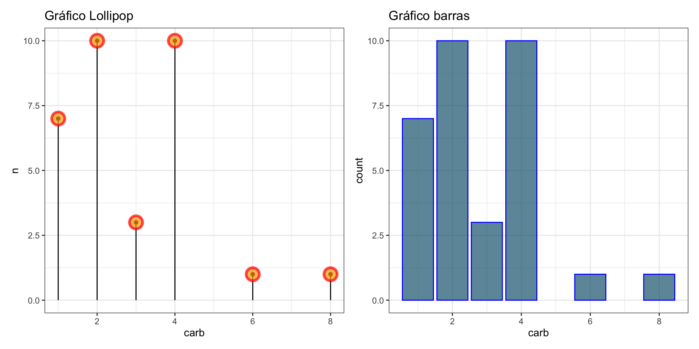
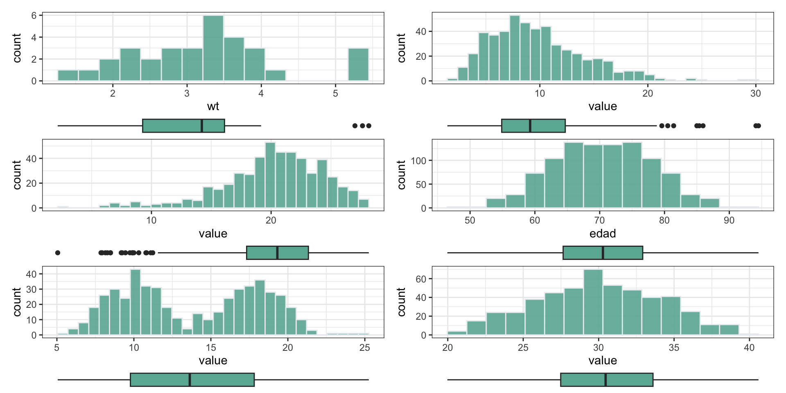

EDA (Exploratory Data Analysis)
Estadística Descriptiva
2025-04-09
1 Análisis Exploratorio de Información
1.1 Introducción
La estadística proporciona métodos para adquirir conocimiento acerca de los fenómenos naturales y mantiene una estrecha relación con el Método científico.
El Método científico permite a los investigadores adquirir conocimientos, de manera objetiva tanto de procesos, como de fenómenos de la naturaleza.
1.1.1 Exploratorios vs Confirmatorios
Métodos estadísticos exploratorios: Son métodos descriptivos y gráficos que permiten estudiar las características generales de los datos obtenidos
Métodos estadísticos confirmatorios: Son procedimientos muy útiles para obtener decisiones y/o conclusiones finales (inferencias estadísticas).
1.2 Introducción
La exactitud de las inferencias o conclusiones depende de la corrección y precisión, éstas a su vez dependen de la formulación del problema.
Las técnicas estadísticas, por muy refinadas y precisas que sean, no pueden ayudar a alcanzar conclusiones o decisiones correctas si se aplican a datos inapropiados.
1.2.1 Población y Muestra
- Población (population) es el conjunto sobre el que estamos interesados en obtener conclusiones (hacer inferencia).
- Normalmente es demasiado grande para poder abarcarlo.
- Muestra (sample) es un subconjunto de la población al que tenemos acceso y sobre el que realmente hacemos las observaciones (mediciones)
- Debería ser representativo
- Esta formado por miembros “seleccionados” de la población (individuos, unidades experimentales).
Ciclo
1.3 Introducción
- Parámetro: Es una cantidad numérica calculada sobre una población
- La altura media de los individuos de un país
- La idea es resumir toda la información que hay en la población en unos pocos números (parámetros).
- Estadístico: Es una cantidad numérica calculada sobre una muestra de la población
- La altura media de los que estamos en este aula.
- ¿Somos una muestra de la población? ¿representativa?
- Si un estadístico se usa para aproximar un parámetro también se le suele llamar estimador.1
- La altura media de los que estamos en este aula.
1.4 Variables y escalas de medición
| Valor | |
|---|---|
| Variable | |
| Estadístico | |
| Parámetro |
- Una variable es una característica observable que varía entre los diferentes individuos de una población. La información que disponemos de cada individuo se resume en variables.
En los individuos de la población mexicana, de uno a otro es variable:
- El grupo sanguíneo
- {A, B, AB, O} Var. Cualitativa
- Su nivel de felicidad “declarado”
- {Deprimido, Indiferente, Muy Feliz} Var. Ordinal
- El número de hijos
- {0,1,2,3,…} Var. Numérica discreta
- La altura
- {1.62 ; 1.74; …} Var. Numérica continua
1.5 Tipos de Variables
Cualitativas o Categóricas: Si sus valores (modalidades) no se pueden asociar naturalmente a un número (no se pueden hacer operaciones algebraicas con ellos)
- Nominales: Si sus valores no se pueden ordenar
- Sexo, Grupo Sanguíneo, Religión, Nacionalidad, Fumar (Sí/No)
- Ordinales: Si sus valores se pueden ordenar
- Mejoría a un tratamiento, Grado de satisfacción, Intensidad del dolor
- Nominales: Si sus valores no se pueden ordenar
Cuantitativas o Numéricas: Si sus valores son numéricos (tiene sentido hacer operaciones algebraicas con ellos)
- Discretas: Si toma valores enteros
- Número de hijos, Número de cigarrillos, Num. de “cumpleaños”
- Continuas: Si entre dos valores, son posibles infinitos valores intermedios.
- Altura, Presión intraocular, Dosis de medicamento administrado, edad
- Discretas: Si toma valores enteros
Escalas de medición
2 Estadística descriptiva
2.1 Estadística descriptiva
Sirve como herramienta para describir o resumir a la muestra.
Comprende la tabulación, representación y descripción de una serie de datos que pueden ser cuantitativos o cualitativos.
2.1.1 Objetivo del Análisis Exploratorio
- Tratar de reconocer cualquier patrón no aleatorio o estructura que requiera explicación.
- Generar posibles hipótesis interesantes.
- No existen modelos rígidos.
- Se da importancia al despliegue visual y representaciones gráficas.
Encontrar la pregunta, frecuentemente es más interesante que buscar la respuesta
2.2 Instrumentos de captación
Existen varios tipos de instrumentos de captación de información, cada uno de ellos tienen sus propios alcances y limitaciones.
Los instrumentos de captación apropiados se seleccionan de acuerdo a los objetivos y el tipo de estudio que se realiza.
Dependiendo del tipo de estudio o investigación, existen diversas maneras de obtener información.
2.3 Preguntas del Análisis de datos
Algunos de las preguntas que se plantean en el análisis de los datos son:
- ¿Qué caracteriza a los datos? (¿Cuál es la información sobresaliente?).
- ¿Qué tanto varían los datos?
- ¿Cómo están distribuidos los datos?
- ¿Qué relación existe entre las variables?
- ¿Qué estimaciones y predicciones resultarán de los datos?
- ¿Qué diferencia existe entre grupos y variables?
- ¿Qué variables causan variación en otras?
- Etc. …
2.4 Codificación de datos
Una vez captada la información por los diversos instrumentos como son los cuestionarios, las entrevistas y otros; es necesario la traducción de la información para la construcción de una base de datos, a este proceso se le llama codificación.
- Sexo (Cualit: Códigos arbitrarios)
- 1 = Hombre
- 2 = Mujer
- Raza (Cualit: Códigos arbitrarios)
- 1 = Blanca
- 2 = Negra,…
- Felicidad Ordinal: Respetar un orden al codificar.
- 1 = Muy feliz
- 2 = Bastante feliz
- 3 = No demasiado feliz
- Se pueden asignar códigos a respuestas especiales como
- 0 = No sabe
- 99 = No contesta…
2.4.1 Datos no codificados
| sexo | raza | feliz | vida | hijos | edad |
|---|---|---|---|---|---|
| 1 | 1 | 1 | 2 | 1 | 48 |
| 1 | 1 | 2 | 2 | 1 | 45 |
| 2 | 1 | 2 | 2 | 1 | 44 |
| 2 | 2 | 1 | 2 | 3 | 41 |
| 1 | 2 | 1 | 2 | 0 | 39 |
| 2 | 2 | 2 | 1 | 1 | 39 |
Datos crudos
2.4.2 Datos codificados
| sexo | raza | feliz | vida | hijos | edad |
|---|---|---|---|---|---|
| Hombre | Blanca | Muy Feliz | Rutinaria | 1 | 48 |
| Hombre | Blanca | Bastante Feliz | Rutinaria | 1 | 45 |
| Mujer | Blanca | Bastante Feliz | Rutinaria | 1 | 44 |
| Mujer | Negra | Muy Feliz | Rutinaria | 3 | 41 |
| Hombre | Negra | Muy Feliz | Rutinaria | 0 | 39 |
| Mujer | Negra | Bastante Feliz | Excitante | 1 | 39 |
Datos Codificados
2.5
2.5.1 Motor Trend Car Road Tests
Description
The data was extracted from the 1974 Motor Trend US magazine, and comprises fuel consumption and 10 aspects of automobile design and performance for 32 automobiles (1973–74 models).
Format
A data frame with 32 observations on 11 (numeric) variables.
- [, 1] mpg Miles/(US) gallon
- [, 2] cyl Number of cylinders
- [, 3] disp Displacement (cu.in.)
- [, 4] hp Gross horsepower
- [, 5] drat Rear axle ratio
- [, 6] wt Weight (1000 lbs)
- [, 7] qsec 1/4 mile time
- [, 8] vs Engine (0 = V-shaped, 1 = straight)
- [, 9] am Transmission (0 = automatic, 1 = manual)
- [,10] gear Number of forward gears
- [,11] carb Number of carburetors
2.6 Motor Trend Car Road Tests
2.6.1 Datos no codificados
| mpg | cyl | disp | hp | drat | wt | qsec | vs | am | gear | carb | |
|---|---|---|---|---|---|---|---|---|---|---|---|
| Mazda RX4 | 21.0 | 6 | 160 | 110 | 3.90 | 2.620 | 16.46 | 0 | 1 | 4 | 4 |
| Mazda RX4 Wag | 21.0 | 6 | 160 | 110 | 3.90 | 2.875 | 17.02 | 0 | 1 | 4 | 4 |
| Datsun 710 | 22.8 | 4 | 108 | 93 | 3.85 | 2.320 | 18.61 | 1 | 1 | 4 | 1 |
| Hornet 4 Drive | 21.4 | 6 | 258 | 110 | 3.08 | 3.215 | 19.44 | 1 | 0 | 3 | 1 |
| Hornet Sportabout | 18.7 | 8 | 360 | 175 | 3.15 | 3.440 | 17.02 | 0 | 0 | 3 | 2 |
| Valiant | 18.1 | 6 | 225 | 105 | 2.76 | 3.460 | 20.22 | 1 | 0 | 3 | 1 |
Datos crudos
2.6.2 Datos codificados
| mpg | cyl | disp | hp | drat | wt | qsec | vs | am | gear | carb | |
|---|---|---|---|---|---|---|---|---|---|---|---|
| Mazda RX4 | 21.0 | 6 | 160 | 110 | 3.90 | 2.620 | 16.46 | V-shapped | manual | 4 | 4 |
| Mazda RX4 Wag | 21.0 | 6 | 160 | 110 | 3.90 | 2.875 | 17.02 | V-shapped | manual | 4 | 4 |
| Datsun 710 | 22.8 | 4 | 108 | 93 | 3.85 | 2.320 | 18.61 | straight | manual | 4 | 1 |
| Hornet 4 Drive | 21.4 | 6 | 258 | 110 | 3.08 | 3.215 | 19.44 | straight | automatic | 3 | 1 |
| Hornet Sportabout | 18.7 | 8 | 360 | 175 | 3.15 | 3.440 | 17.02 | V-shapped | automatic | 3 | 2 |
| Valiant | 18.1 | 6 | 225 | 105 | 2.76 | 3.460 | 20.22 | straight | automatic | 3 | 1 |
your-caption-name
2.7 Tablas de Frecuencia
Exponen la información recogida en la muestra, de forma que no se pierda nada de información (o poca).
Frecuencias absolutas: Contabilizan el número de individuos de cada modalidad
Frecuencias relativas (porcentajes): Idem, pero dividido por el total
Frecuencias acumuladas: Sólo tienen sentido para variables ordinales y numéricas
- Muy útiles para calcular cuantiles (ver más adelante)
2.8 Ejemplos de tablas de frecuencias
2.8.1 Tabla de Frecuencias de cylinders
| Frec. | % Válido | % Válido acu. | % Total | % Total acu. | |
|---|---|---|---|---|---|
| 4 | 11 | 34.375 | 34.375 | 34.375 | 34.375 |
| 6 | 7 | 21.875 | 56.250 | 21.875 | 56.250 |
| 8 | 14 | 43.750 | 100.000 | 43.750 | 100.000 |
| 0 | NA | NA | 0.000 | 100.000 | |
| Total | 32 | 100.000 | 100.000 | 100.000 | 100.000 |
2.8.2 Tabla de Frecuencias de weight categorizado
| Frec. | % Válido | % Válido acu. | % Total | % Total acu. | |
|---|---|---|---|---|---|
| (1.51,2.3] | 6 | 18.750 | 18.750 | 18.750 | 18.750 |
| (2.3,3.08] | 6 | 18.750 | 37.500 | 18.750 | 37.500 |
| (3.08,3.86] | 16 | 50.000 | 87.500 | 50.000 | 87.500 |
| (3.86,4.64] | 1 | 3.125 | 90.625 | 3.125 | 90.625 |
| (4.64,5.43] | 3 | 9.375 | 100.000 | 9.375 | 100.000 |
| 0 | NA | NA | 0.000 | 100.000 | |
| Total | 32 | 100.000 | 100.000 | 100.000 | 100.000 |
2.9 Ejemplo
2.9.1 Transmisión automática-manual
| Frec. | % Válido | % Válido acu. | % Total | % Total acu. | |
|---|---|---|---|---|---|
| automatic | 19 | 59.375 | 59.375 | 59.375 | 59.375 |
| manual | 13 | 40.625 | 100.000 | 40.625 | 100.000 |
| 0 | NA | NA | 0.000 | 100.000 | |
| Total | 32 | 100.000 | 100.000 | 100.000 | 100.000 |
2.10 Ejemplo
2.10.1 Número de Carburadores
¿Cuántos autos en la BD tienen menos de cuatro carburadores?
¿Qué porcentaje de autos en la BD tiene cuatro carburadores o menos?
¿Qué porcentaje de autos de la BD no sabemos cuantos carburadores tiene?
3 Resumen de estadísticos
3.1 Resumen de estadísticos
Estadísticos
3.2 Resumen de estadísticos
- Posición
- Dividen un conjunto ordenado de datos en grupos con la misma cantidad de individuos.
- Cuantiles, percentiles, cuartiles, deciles,…
- Dividen un conjunto ordenado de datos en grupos con la misma cantidad de individuos.
- Centralidad
- Indican valores con respecto a los que los datos parecen agruparse.
- Media, mediana y moda
- Indican valores con respecto a los que los datos parecen agruparse.
- Dispersión
- Indican la mayor o menor concentración de los datos con respecto a las medidas de Centralidad.
- Desviación típica, coeficiente de variación, rango, varianza
- Indican la mayor o menor concentración de los datos con respecto a las medidas de Centralidad.
- Forma
- Asimetría
- Apuntamiento o curtosis
3.3 Estadísticos de posición
Se define el cuantil de orden \(a\) como un valor de la variable por debajo del cual se encuentra una frecuencia acumulada \(a\).
Casos particulares son los percentiles, cuartiles, deciles, quintiles,…
| Frec. | % Válido | % Válido acu. | % Total | % Total acu. | |
|---|---|---|---|---|---|
| 1 | 7 | 21.875 | 21.875 | 21.875 | 21.875 |
| 2 | 10 | 31.250 | 53.125 | 31.250 | 53.125 |
| 3 | 3 | 9.375 | 62.500 | 9.375 | 62.500 |
| 4 | 10 | 31.250 | 93.750 | 31.250 | 93.750 |
| 6 | 1 | 3.125 | 96.875 | 3.125 | 96.875 |
| 8 | 1 | 3.125 | 100.000 | 3.125 | 100.000 |
| 0 | NA | NA | 0.000 | 100.000 | |
| Total | 32 | 100.000 | 100.000 | 100.000 | 100.000 |
| Frec. | % Válido | % Válido acu. | % Total | % Total acu. | |
|---|---|---|---|---|---|
| 1.513 | 1 | 3.125 | 3.125 | 3.125 | 3.125 |
| 1.615 | 1 | 3.125 | 6.250 | 3.125 | 6.250 |
| 1.835 | 1 | 3.125 | 9.375 | 3.125 | 9.375 |
| 1.935 | 1 | 3.125 | 12.500 | 3.125 | 12.500 |
| 2.14 | 1 | 3.125 | 15.625 | 3.125 | 15.625 |
| 2.2 | 1 | 3.125 | 18.750 | 3.125 | 18.750 |
| 2.32 | 1 | 3.125 | 21.875 | 3.125 | 21.875 |
| 2.465 | 1 | 3.125 | 25.000 | 3.125 | 25.000 |
| 2.62 | 1 | 3.125 | 28.125 | 3.125 | 28.125 |
| 2.77 | 1 | 3.125 | 31.250 | 3.125 | 31.250 |
| 2.78 | 1 | 3.125 | 34.375 | 3.125 | 34.375 |
| 2.875 | 1 | 3.125 | 37.500 | 3.125 | 37.500 |
| 3.15 | 1 | 3.125 | 40.625 | 3.125 | 40.625 |
| 3.17 | 1 | 3.125 | 43.750 | 3.125 | 43.750 |
| 3.19 | 1 | 3.125 | 46.875 | 3.125 | 46.875 |
| 3.215 | 1 | 3.125 | 50.000 | 3.125 | 50.000 |
| 3.435 | 1 | 3.125 | 53.125 | 3.125 | 53.125 |
| 3.44 | 3 | 9.375 | 62.500 | 9.375 | 62.500 |
| 3.46 | 1 | 3.125 | 65.625 | 3.125 | 65.625 |
| 3.52 | 1 | 3.125 | 68.750 | 3.125 | 68.750 |
| 3.57 | 2 | 6.250 | 75.000 | 6.250 | 75.000 |
| 3.73 | 1 | 3.125 | 78.125 | 3.125 | 78.125 |
| 3.78 | 1 | 3.125 | 81.250 | 3.125 | 81.250 |
| 3.84 | 1 | 3.125 | 84.375 | 3.125 | 84.375 |
| 3.845 | 1 | 3.125 | 87.500 | 3.125 | 87.500 |
| 4.07 | 1 | 3.125 | 90.625 | 3.125 | 90.625 |
| 5.25 | 1 | 3.125 | 93.750 | 3.125 | 93.750 |
| 5.345 | 1 | 3.125 | 96.875 | 3.125 | 96.875 |
| 5.424 | 1 | 3.125 | 100.000 | 3.125 | 100.000 |
| 0 | NA | NA | 0.000 | 100.000 | |
| Total | 32 | 100.000 | 100.000 | 100.000 | 100.000 |
3.4
- Percentil de orden \(k =\) cuantil de orden \(\frac{k}{100}\), es decir divide la muestra en 100 partes
- La mediana es el percentil \(50\)
- El percentil de orden \(15\) deja por debajo al \(15\%\) de las observaciones. Por encima queda el \(85\%\)
- Cuartiles: Dividen a la muestra en \(4\) grupos con frecuencias similares.
- Primer cuartil = Percentil \(25\) = Cuantil \(0.25\)
- Segundo cuartil = Percentil \(50\) = Cuantil \(0.5\) = mediana
- Tercer cuartil = Percentil \(75\) = cuantil \(0.75\)
3.5
3.5.1 Ejemplos de estadísticos de posición
El 5% de los recién nacidos tiene un peso demasiado bajo. ¿Qué peso se considera demasiado bajo?
- Percentil 5 o cuantil 0.05
¿Qué peso es superado sólo por el 25% de los individuos?
- Percentil 75
El colesterol se distribuye simétricamente en la población. Se considera patológico los valores extremos. El 90% de los individuos son normales ¿Entre qué valores se encuentran los individuos normales?
- Entre el percentil 5 y el 95
¿Entre qué valores se encuentran la mitad de los individuos más normales de una población?
- Entre el cuartil 1º y 3º
3.6
3.6.1 Ejemplo de estadísticos de posición
¿Qué peso no llega a alcanzar el \(25\%\) de los individuos?
¿Qué peso es superado por el \(25\%\) de los individuos?
¿Entre qué valores se encuentra el \(50\%\) de los individuos con un peso “más normal”?

3.7 Centralidad
- Media (‘mean’) Es la media aritmética (promedio) de los valores de una variable. Suma de los valores dividido por el tamaño muestral. \[ \bar{x} = \frac{\sum_{i=1}^n x_i}{n} \]
- Media de \(2,2,3,7\) es \(\frac{2+2+3+7}{4}=\frac{14}{4}=3.5\)
- Conveniente cuando los datos se concentran simétricamente con respecto a ese valor. Muy sensible a valores extremos.
- Centro de gravedad de los datos
- Media de \(2,2,3,70\) es \(\frac{2+2+3+70}{4} =\frac{77}{4}=19.25\)
3.8
- Mediana (‘median’) Es un valor que divide a las observaciones en dos grupos con el mismo número de individuos (percentil 50). La mediana se obtiene sobre los datos ordenados.
- Si \(n\) es impar: la mediana es la observación que está en el lugar \(\frac{n+1}{2}\), es decir \[\widetilde{x}=x_{(\frac{n+1}{2})}\]
- Si \(n\) es par: la mediana es el promedio de las observaciones \((\frac{n}{2})\) y \((\frac{n}{2}+1)\), es decir \[\widetilde{x}=\frac{x_{(\frac{n}{2})} + x_{(\frac{n}{2}+1)}}{2}\]
- Mediana de 1,2,4,5,6,6,8 es 5
- Mediana de 1,2,4,5,6,6,8,9 es \(\frac{5+6}{2}=5.5\)
- Es conveniente cuando los datos son asimétricos. No es sensible a valores extremos.
- Mediana de 1,2,4,5,6,6,800 es \(5\). ¡La media es \(117.7\)!
- Moda (‘mode’) Es el/los valor/es donde la distribución de frecuencia alcanza un máximo. Para el ejemplo de la variable carb del conjunto de datos mtcars la moda son los valores \(2\) y \(4\)
3.9 Medidas de Variabilidad o Dispersión
Miden el grado de dispersión (variabilidad) de los datos, independientemente de su causa.
\[RI =Q_3 - Q_1 = 75-65 =10\] \[Rango = Max -Min = 92-49 = 43 \]
3.10
Varianza \(S^2\) (‘Variance’):
Mide el promedio de las desviaciones (al cuadrado) de las observaciones con respecto a la media.
\[S^2 = \frac{1}{n}\sum_{i=1}^n (x_i - \overline{x})^2 \]
- Es sensible a valores extremos (alejados de la media).
- Sus unidades son el cuadrado de las de la variable.
3.11
Desviación típica o estándar (‘standard deviation’):
Es la raíz cuadrada de la varianza \[S=\sqrt{S^2}\]

3.12
Coeficiente de variación
Es la razón entre la desviación típica y la media. \[cv = \frac{S}{\bar x}\]
Mide la desviación típica en forma de “qué tamaño tiene con respecto a la media”
También se la denomina variabilidad relativa.
Es frecuente mostrarla en porcentajes
- Si la media es 80 y la desviación típica 20 entonces \(CV=20/80=0.25=25\%\) (variabilidad relativa)
Es una cantidad adimensional. Interesante para comparar la variabilidad de diferentes variables.
- Si el peso tiene \(CV=30\%\) y la altura tiene CV=10%, los individuos presentan más dispersión en peso que en altura.
No debe usarse cuando la variable presenta valores negativos o donde el valor 0 sea una cantidad fijada arbitrariamente
- Por ejemplo \(0^{\circ}C \ne 0^{\circ}F\)
3.13 Medidas de Forma
La curtosis y el sesgo son medidas de forma de una serie de datos a los cuales se les ajusta una distribución de probabilidad.
Sesgo (‘Skewness’):
Sesgo, también llamado coeficiente de asimetría, mide si la cola de la distribución es más larga hacia la derecha o la izquierda, es decir, que tan “ladeada” o asimétrica pudiera estar la curva de la distribución de datos.
Skewness
3.14

Relación entre Media, Mediana y Moda para diferentes Sesgos
Hay muchas formas de medir el sesgo. Una de las formas más simples es la asimetría mediana de Pearson. \[Sesgo = 3 \times \frac{(Media - Mediana)}{desv.std.}\]
Para los datos de peso de autos tenemos que
Media = 3.21725, Mediana = 3.325, Desv.std. = 0.9784574
Entonces \(Sesgo = 3 \times \frac{(Media - Mediana)}{desv.std.}=\) -0.3303669
3.15
Curtosis (‘Kurtosis’):
La curtosis por su parte, es una medida de “apuntamiento” de la distribución, en términos coloquiales refleja la altura de la curva o que tan “picuda” es. Es una “medida de forma” que determina la concentración o el grado de cercanía de los datos en torno a las medidas de tendencia central.
Clasificación de curtosis
3.16 Ejemplo mtcars
3.16.1 Summary
3.17
3.17.1 summarytools::descr
| carb | cyl | disp | drat | gear | hp | mpg | qsec | wt | |
|---|---|---|---|---|---|---|---|---|---|
| Media | 2.81 | 6.19 | 230.72 | 3.60 | 3.69 | 146.69 | 20.09 | 17.85 | 3.22 |
| Dev.std. | 1.62 | 1.79 | 123.94 | 0.53 | 0.74 | 68.56 | 6.03 | 1.79 | 0.98 |
| Min | 1.00 | 4.00 | 71.10 | 2.76 | 3.00 | 52.00 | 10.40 | 14.50 | 1.51 |
| Q1 | 2.00 | 4.00 | 120.65 | 3.08 | 3.00 | 96.00 | 15.35 | 16.88 | 2.54 |
| Mediana | 2.00 | 6.00 | 196.30 | 3.70 | 4.00 | 123.00 | 19.20 | 17.71 | 3.33 |
| Q3 | 4.00 | 8.00 | 334.00 | 3.92 | 4.00 | 180.00 | 22.80 | 18.90 | 3.65 |
| Max | 8.00 | 8.00 | 472.00 | 4.93 | 5.00 | 335.00 | 33.90 | 22.90 | 5.42 |
| RI | 2.00 | 4.00 | 205.18 | 0.84 | 1.00 | 83.50 | 7.38 | 2.01 | 1.03 |
| CV | 0.57 | 0.29 | 0.54 | 0.15 | 0.20 | 0.47 | 0.30 | 0.10 | 0.30 |
| Asimetría | 1.05 | -0.17 | 0.38 | 0.27 | 0.53 | 0.73 | 0.61 | 0.37 | 0.42 |
| Curtosis | 1.26 | -1.76 | -1.21 | -0.71 | -1.07 | -0.14 | -0.37 | 0.34 | -0.02 |
| Num.Válido | 32.00 | 32.00 | 32.00 | 32.00 | 32.00 | 32.00 | 32.00 | 32.00 | 32.00 |
| Pct.Válido | 100.00 | 100.00 | 100.00 | 100.00 | 100.00 | 100.00 | 100.00 | 100.00 | 100.00 |
4 Gráficos
4.1 Análisis Exploratorio de Datos (EDA)
4.1.1 Técnicas gráficas (visualización de datos)
Vistas marginales (Univariado):
- Cualitativas
- Diagrama de pastel o sectores
- Gráficos de Barras
- Numéricas
- Discretas
- Diagramas de puntos
- Diagrama Lollipop
- Gráficos de Barras
- Continuas
- Histogramas
- Diagrama de Caja
- Discretas
4.2 Gráficos para variables Cualitativas
4.2.1 Diagramas de Barra vs Digrama de sectores
- Diagramas de barras
- Alturas proporcionales a las frecuencias (abs. o rel.)
- Se pueden aplicar también a variables discretas
- Diagramas de sectores (pie, pastel )
- No usarlo con variables ordinales.
- El área de cada sector es proporcional a su frecuencia (abs. o rel.)
4.3 Cualitativas
4.3.1 Diagrama de pastel o sectores
Diagrama de pastel o sectores
4.4 Cualitativas
4.4.1 Gráfico o diagrama de barras
4.5 Gráficos diferenciales para variables numéricas (Discretas vs Contínuas)
- Son diferentes en función de que las variables sean discretas o continuas. Valen con frec. absolutas o relativas.
- Diagramas barras para variables discretas
- Se deja un hueco entre barras para indicar los valores que no son posibles
- Histogramas para variables continuas
- El área que hay bajo el histograma entre dos puntos cualesquiera indica la cantidad (porcentaje o frecuencia) de individuos en el intervalo.
- Diagramas barras para variables discretas
4.6 Numérica Discreta
4.6.1 Diagrama de puntos
4.7 Numérica Discreta
4.7.1 Diagrama Lollipop y Diagrama de barras
4.8 Numérica Contínua
4.8.1 Histograma
4.9
4.9.1
4.10
4.10.1
4.11 Numérica Contínua
4.11.1 Diagrama de Caja
4.12
Boxplot Ver. 2.0
4.13
4.13.1
4.14 Análisis Exploratorio de Datos (EDA)
4.14.1 Técnicas gráficas (visualización de datos)
Gráficas conjuntas (Bivariadas)
- Cualitativo vs Cualitativo
- Barras
- Mosaico
- Numérico vs Numérico
- Dispersión
- Cualitativo vs Numérico
- Cajas categorizadas
- Diagrama de puntos categorizado
- Diagrama de Violín
- Histograma por grupos
4.15 Cualitativo vs Cualitativo
4.15.1 Barras
4.16
4.16.1 Mosaico
4.17 Numérico vs Numérico
4.17.1 Diagrama de Dispersión
4.18
4.18.1
4.19 Cualitativo vs Numérico
4.19.1 Cajas categorizadas
4.20
4.20.1
4.21 Cualitativo vs Numérico
4.21.1 Diagrama de puntos categorizado
4.22 Cualitativo vs Numérico
4.22.1 Diagrama de violín
4.23 Cualitativo vs Numérico
4.23.1 Histograma por grupos
4.24 Análisis Exploratorio de Datos Multivariados
4.24.1 Técnicas gráficas (visualización de datos)
Gráficos de dos dimensiones combinados.
- Dispersión- histograma
- Dispersión- densidad
- Dispersión- cajas
- Matriz de dispersiones
Gráficos de tres o más dimensiones
- Dispersión categorizado
- Matriz de diagramas de dispersión
- Matriz de diagramas de dispersión categorizados
4.25 Gráficos de dos dimensiones combinados.
4.25.1 Dispersión - histograma
4.26 Gráficos de dos dimensiones combinados.
4.26.1 Dispersión- Densidad
4.27 Gráficos de dos dimensiones combinados.
4.27.1 Dispersión - Cajas
4.28 Gráficos de tres o más dimensiones
4.28.1 Diagrama de dispersión categorizado
4.29 Gráficos de tres o más dimensiones
4.29.1 Matriz de Diagramas de Dispersión
4.30 Gráficos de tres o más dimensiones
4.30.1 Matriz de Diagramas de Dispersión categorizado
4.31 Resúmen
4.32 Sitios de interés
Existe una gran cantidad de libros, sitios web y recursos para aprender R, aquí se presenta una selección